Сезон · данные на 22 ноября
Куда сходить осенью в Петербурге
42 плана и 41 место, где особенно красиво в сентябре и октябре: парки и усадьбы, сады и набережные — например, «Оранжерея Таврического сада», «Юсуповский сад» и «Ботанический сад Петра Великого». После прогулки — кофейня, чайная или ужин в паре минут ходьбы.
- 42 плана
- 41 место
Осенние планы 24 из 42
- Музей петербургского авангарда (Дом Матюшина) · Дом-музей · м. Петроградская
- 9 минут пешкомМечта · Кофейня
Сначала маленький деревянный дом-музей, потом семь минут пешком до кофейни с осенними напитками. Камерно и без спешки.
Открыть план: Авангард и сезонный кофеПозвать сюда: Авангард и сезонный кофе
Фото: MaryannaNesina, CC BY 3.0 · Wikimedia Commons
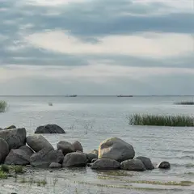
- Парк Александрия · Парк · ж/д Новый Петергоф
- 8 минут пешкомДворец Коттедж · Музей
Сначала идёте по аллеям парка к заливу, потом заходите в маленький дворец в шести минутах. Тихо, без толп парадного Петергофа.
Открыть план: Александрия и дворец у заливаПозвать сюда: Александрия и дворец у залива
Фото: Egregiu, CC BY-SA 4.0 · Wikimedia Commons
- Музей Арктики и Антарктики · Музей · м. Владимирская
- 5 минут пешкомБа · Ресторан русской кухни
- 1 минута пешкомRing o'Bells · Паб
Полярные экспедиции в музее, потом сытные щи в пяти минутах и пинта в пабе буквально через дорогу.
Открыть план: Арктика, щи и пабПозвать сюда: Арктика, щи и паб
Фото: Виктор Лимаренко, CC BY-SA 4.0 · Wikimedia Commons
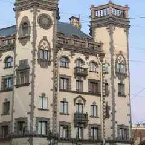
- Дом с башнями · Доходный дом-«замок» · м. Петроградская
- 6 минут пешкомНабережная реки Карповки · Набережная
- 5 минут пешкомМечта · Кофейня
От дома-замка на площади спускаетесь к Карповке и идёте вдоль воды, а греться заходите в кофейню — она в пяти минутах от набережной.
Открыть план: Башни, Карповка и матчаПозвать сюда: Башни, Карповка и матча
Фото: Grigorius m, CC BY-SA 4.0 · Wikimedia Commons
- Музей Довлатова · Музей · м. Достоевская
- 7 минут пешкомБа · Ресторан русской кухни
- 1 минута пешкомEl Copitas · Коктейльный бар
Короткий музей Довлатова, ужин в щичной в пяти минутах ходьбы и коктейль в соседнем баре напоследок.
Открыть план: Довлатов, щи и коктейльПозвать сюда: Довлатов, щи и коктейль
Фото: Kommunalka1912, CC BY-SA 4.0 · Wikimedia Commons
- Литературно-мемориальный музей Достоевского · Музей · м. Владимирская
- 3 минуты пешкомБа · Ресторан русской кухни
Квартира Достоевского в двух минутах от щичной: после музея — горячие щи и соленья, очень петербургский осенний вечер.
Открыть план: Достоевский и тарелка щейПозвать сюда: Достоевский и тарелка щей
Фото: Александровы АГ, CC BY-SA 4.0 · Wikimedia Commons
- Дом с башнями · Доходный дом-«замок» · м. Петроградская
- 4 минуты пешкомSecret Garden · Оранжерея
- 4 минуты пешкомNerede · Кофейня
Дом с башнями на площади Льва Толстого, рядом зимний сад с фонтаном, затем кофе в Nerede — всё в паре минут ходьбы.
Открыть план: Замок, пальмы и кофеПозвать сюда: Замок, пальмы и кофе
Фото: Grigorius m, CC BY-SA 4.0 · Wikimedia Commons
- Крейсер Аврора · Музей-корабль · м. Горьковская
- 14 минут пешкомЛетний сад · Сад
Осмотреть корабль, затем перейти Неву по Троицкому мосту и гулять по аллеям сада: около пятнадцати минут пешком.
Открыть план: Крейсер и Летний садПозвать сюда: Крейсер и Летний сад
Фото: Smart Vombat, CC BY 3.0 · Wikimedia Commons
- Музей Штиглица · Музей · м. Чернышевская
- 3 минуты пешкомCasimir · Кофейня
Роскошные залы музея Штиглица, а через две минуты — уютная кофейня с осенним меню, чтобы согреться супом или оладьями.
Открыть план: Музей Штиглица и тыквенный супПозвать сюда: Музей Штиглица и тыквенный суп
Фото: Lion10~commonswiki, CC BY-SA 4.0 · Wikimedia Commons
- Оранжерея Таврического сада · Оранжерея · м. Чернышевская
- 5 минут пешкомAm Saint · Кофейня
Фотографируетесь среди лиан и кактусов, а потом семь минут идёте до кофейни. Короткий план, когда хочется зелени посреди серого сезона.
Открыть план: Оранжерея и кофеПозвать сюда: Оранжерея и кофе
Фото: Екатерина Борисова, CC BY-SA 4.0 · Wikimedia Commons
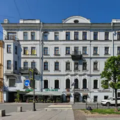
- Таврический сад · Сад · м. Чернышевская
- 8 минут пешкомСундук · Арт-кафе
Круг по саду в сумерках, а дальше шесть минут до кафе, где вечером играют живую музыку. После прогулки приятно разглядывать интерьер и отогреваться.
Открыть план: Таврический сад и джазПозвать сюда: Таврический сад и джаз
Фото здания: Анастасия Юрьевна Львова, CC BY-SA 4.0 · Wikimedia Commons
- Оранжерея Таврического сада · Оранжерея · м. Чернышевская
- 4 минуты пешкомТаврический сад · Сад
- 8 минут пешкомСундук · Арт-кафе
Греетесь среди пальм, проходите через сад и минут через шесть садитесь обедать в кафе, увешанном редкостями. Тепло, прогулка и еда по очереди.
Открыть план: Тропики, сад и кафе с историейПозвать сюда: Тропики, сад и кафе с историей
Фото: Екатерина Борисова, CC BY-SA 4.0 · Wikimedia Commons
- Юсуповский сад · Сад · м. Садовая
- 12 минут пешкомCAVE-01 · Кофейня
Круг по саду у пруда, затем десять минут по Садовой до кофейни с напитками на берёзовом соке и иван-чае.
Открыть план: Юсуповский сад и необычный кофеПозвать сюда: Юсуповский сад и необычный кофе
Фото: A.Z.Anisimov, CC BY-SA 4.0 · Wikimedia Commons
- Юсуповский сад · Сад · м. Садовая
- 5 минут пешкомПышечка · Пышечная
Прогулка по Юсуповскому саду, а через пять минут — пакет пышек и прогулка вдоль канала Грибоедова.
Открыть план: Юсуповский сад и пышкиПозвать сюда: Юсуповский сад и пышки
Фото: A.Z.Anisimov, CC BY-SA 4.0 · Wikimedia Commons
- Аквапарк «Питерлэнд» · Аквапарк · м. Беговая
- 1 минута пешкомПапаша Клаусс · Ресторан-пивоварня
Горки и тропическое тепло в любую погоду, а пивоварня с видом на залив — прямо по соседству.
Открыть план: Аквапарк и пивоварняПозвать сюда: Аквапарк и пивоварня
Фото: Vasyatka1, CC BY-SA 4.0 · Wikimedia Commons
- Ботанический сад Петра Великого · Сад · м. Петроградская
- 15 минут пешкомLavraki bistro · Рыбный ресторан
Японский сад и оранжереи с тропиками старейшего ботсада страны, а потом 15 минут пешком — средиземноморский рыбный ресторан с видом на Большую Невку.
Открыть план: Ботанический сад и рыба у НевкиПозвать сюда: Ботанический сад и рыба у Невки
Фото: Afanasovich, CC BY 4.0 · Wikimedia Commons
- Ботанический сад Петра Великого · Сад · м. Петроградская
- 7 минут пешкомBig Wine Freaks · Винный бар
Японский сад и оранжереи с тропиками, а потом 7 минут пешком — шампань-бар, с которого началась гастроулица на Инструментальной.
Открыть план: Ботанический сад и шампань-барПозвать сюда: Ботанический сад и шампань-бар
Фото: Afanasovich, CC BY 4.0 · Wikimedia Commons
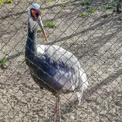
- Ленинградский зоопарк · Зоопарк · м. Горьковская
- 7 минут пешкомAtom Heart Coffee · Кофейня
Тигры, приматы и птицы в одном из старейших зоопарков страны, а потом 7 минут пешком — яркая кофейня в эстетике 60–70-х.
Открыть план: Зоопарк и кофейня в духе 70-хПозвать сюда: Зоопарк и кофейня в духе 70-х
Фото: Александровы АГ, CC BY-SA 4.0 · Wikimedia Commons
- Кронштадт: Якорная площадь и Морской собор · Прогулочный район · м. Беговая
- дальше на метро или таксиОстров фортов · Парк
Морской собор и тихие улицы города-крепости, а потом — Остров фортов: маяк, аллея флота и форты на горизонте. Между точками — на автобусе или такси.
Открыть план: Кронштадт: собор и фортыПозвать сюда: Кронштадт: собор и форты
Фото: Валера37526, CC BY-SA 4.0 · Wikimedia Commons
- Лахта Центр: обзорная площадка и набережная · Смотровая площадка · м. Беговая
- 24 минуты пешкомПарк 300-летия Санкт-Петербурга · Парк
Панорама города и залива с самого высокого небоскрёба Европы, а потом прогулка по молу парка 300-летия — солнце садится прямо в воду.
Открыть план: Лахта: 83-й этаж и закат над заливомПозвать сюда: Лахта: 83-й этаж и закат над заливом
Фото: TomPlay148, CC BY-SA 3.0 · Wikimedia Commons
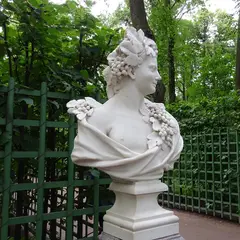
- Летний сад · Сад · м. Площадь Ленина
- 14 минут пешкомDuo Gastrobar · Гастробар
Мраморные статуи и аллеи старейшего сада города, а дальше 14 минут пешком по тихим улицам к маленькому гастробару, с которого началась новая ресторанная волна Петербурга.
Открыть план: Летний сад и гастробар у кирхиПозвать сюда: Летний сад и гастробар у кирхи
Фото: Anastasia Galyamicheva, CC BY-SA 4.0 · Wikimedia Commons
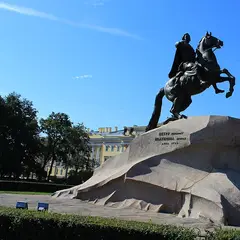
- Сенатская площадь и Медный всадник · Площадь · м. Адмиралтейская
- 2 минуты пешкомАлександровский сад · Сад
- 7 минут пешкомMichèle · Ресторан
Пётр на гранитной скале и Нева, потом сквер с фонтаном у золотого шпиля Адмиралтейства, а ужин — в парижской брассери «Англетера».
Открыть план: Медный всадник, сквер у шпиля и брассериПозвать сюда: Медный всадник, сквер у шпиля и брассери
Фото: Huanivanovich, CC BY-SA 3.0 · Wikimedia Commons
- Парк 300-летия Санкт-Петербурга · Парк · м. Беговая
- 24 минуты пешкомЛахта Центр: обзорная площадка и набережная · Смотровая площадка
Прогулка по длинному молу на закате, а потом подъём на 83-й этаж самого высокого небоскрёба Европы — огни города и залива.
Открыть план: Мол парка 300-летия и ЛахтаПозвать сюда: Мол парка 300-летия и Лахта
Фото: Germash19, CC BY-SA 4.0 · Wikimedia Commons
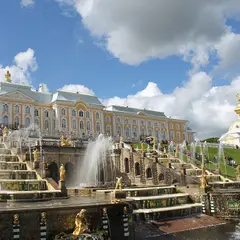
- Нижний парк Петергофа · Парк · ж/д Новый Петергоф
- дальше на метро или таксиПарк Александрия · Парк
Большой каскад и аллеи Нижнего парка до залива, а потом полчаса пешком вдоль воды (или пара минут на такси) — соседняя Александрия: готическая капелла и пустые тропинки.
Открыть план: Петергоф: каскады и АлександрияПозвать сюда: Петергоф: каскады и Александрия
Фото: Клеткин, CC BY-SA 3.0 · Wikimedia Commons


Где красиво осенью 24 из 41
Шпалерная ул., 43
Новое
Тёплый зимний сад с пальмами, кактусами и лианами — тропики посреди холодного сезона. Приятно зайти вдвоём, когда на улице слякоть.
Подробнее и маршрут: Оранжерея Таврического садаПозвать сюда: Оранжерея Таврического сада
Фото: Екатерина Борисова, CC BY-SA 4.0 · Wikimedia Commons
Садовая ул., 54
Пейзажный сад у Сенной с большим прудом и островком; местные коты-старожилы встречают гостей, открыт с утра до позднего вечера.
Подробнее и маршрут: Юсуповский садПозвать сюда: Юсуповский сад
Фото: A.Z.Anisimov, CC BY-SA 4.0 · Wikimedia Commons
ул. Профессора Попова, 2П
Старейший ботанический сад страны: дендрарий, японский сад и оранжереи с тропиками; осенью сюда приходят любоваться клёнами.
Подробнее и маршрут: Ботанический сад Петра ВеликогоПозвать сюда: Ботанический сад Петра Великого
Фото: Afanasovich, CC BY 4.0 · Wikimedia Commons
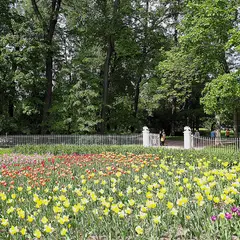
Елагин остров, 4Т
Остров-парк без машин: пруды, белки, дворец и Стрелка, где провожают солнце над заливом. Осенью — одно из лучших мест города.
Подробнее и маршрут: Елагин островПозвать сюда: Елагин остров
Фото: Александровы АГ, CC BY-SA 4.0 · Wikimedia Commons
наб. Кутузова, 30
Старейший регулярный сад города: мраморные статуи, фонтаны и знаменитая ограда у Невы. Осенью аллеи особенно хороши.
Подробнее и маршрут: Летний садПозвать сюда: Летний сад
Фото: Anastasia Galyamicheva, CC BY-SA 4.0 · Wikimedia Commons
Петергоф, Разводная ул., 2
Каскады, Самсон и аллеи до самого залива — на Петергоф стоит закладывать целый день. Сезон фонтанов уточняйте перед поездкой.
Подробнее и маршрут: Нижний парк ПетергофаПозвать сюда: Нижний парк Петергофа
Фото: Клеткин, CC BY-SA 3.0 · Wikimedia Commons
Павловск, Садовая ул., 20
Огромный пейзажный парк с долинами, мостиками и колоннадой Аполлона; белки здесь почти ручные — возьмите орешки.
Подробнее и маршрут: Павловский паркПозвать сюда: Павловский парк
Фото: Florstein, CC BY-SA 4.0 · Wikimedia Commons
Приморский пр., 74
Молодой парк на берегу залива: длинный мол, вид на Лахта Центр и закаты прямо над водой — особенно хорош вечером.
Подробнее и маршрут: Парк 300-летия Санкт-ПетербургаПозвать сюда: Парк 300-летия Санкт-Петербурга
Фото: Germash19, CC BY-SA 4.0 · Wikimedia Commons
Петергоф, парк Александрия
Пейзажный парк-дача у моря по соседству с Нижним парком: готическая капелла, Коттедж и пустые тропинки вдоль залива.
Подробнее и маршрут: Парк АлександрияПозвать сюда: Парк Александрия
Фото: Egregiu, CC BY-SA 4.0 · Wikimedia Commons
Приморский пр., 72
Крупный крытый аквапарк у залива: горки, бассейны и тропическое тепло в любую погоду.
Подробнее и маршрут: Аквапарк «Питерлэнд»Позвать сюда: Аквапарк «Питерлэнд»
Фото: Vasyatka1, CC BY-SA 4.0 · Wikimedia Commons
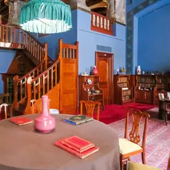
Пушкин, Дворцовая ул., 2
Соседний с Екатерининским, но тише: Китайская деревня, пруды и старые аллеи без толп туристов.
Подробнее и маршрут: Александровский парк (Пушкин)Позвать сюда: Александровский парк (Пушкин)
Фото: Никонико962, CC BY-SA 4.0 · Wikimedia Commons
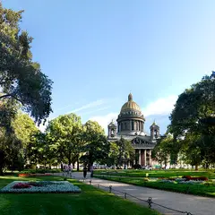
Адмиралтейский пр.
Сквер у Адмиралтейства с фонтаном и видом на золотой шпиль — удобная передышка между Дворцовой и Исаакием.
Подробнее и маршрут: Александровский садПозвать сюда: Александровский сад
Фото: Alexander77, CC BY-SA 3.0 · Wikimedia Commons
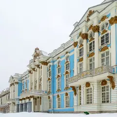
Пушкин, Садовая ул., 7
Парк Царского Села с Камероновой галереей, Большим прудом и павильонами; осенью — один из самых красивых маршрутов области.
Подробнее и маршрут: Екатерининский паркПозвать сюда: Екатерининский парк
Фото: Никонико962, CC BY-SA 4.0 · Wikimedia Commons
Александровский парк, 1
Один из старейших зоопарков страны на Петроградке: тигры, приматы, хищники и птицы, работает круглый год.
Подробнее и маршрут: Ленинградский зоопаркПозвать сюда: Ленинградский зоопарк
Фото: Александровы АГ, CC BY-SA 4.0 · Wikimedia Commons
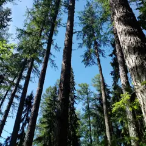
у пос. Рощино, Выборгский р-н
Новое
Корабельная роща из лиственниц, посаженная при Петре: высоченные стволы вдоль реки Рощинки, а в октябре всё становится золотым. Электричка с Финляндского до Рощино, дальше около 3 км пешком.
Подробнее и маршрут: Линдуловская рощаПозвать сюда: Линдуловская роща
Фото: Hedgehogarrow, CC BY-SA 4.0 · Wikimedia Commons
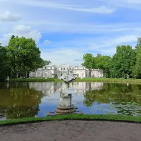
Ломоносов, Дворцовый пр., 48
Тихая усадьба у залива: Китайский дворец, пергола в виноградных листьях и олени; утром и вечером вход бывает свободным.
Подробнее и маршрут: ОраниенбаумПозвать сюда: Ораниенбаум
Фото: Екатерина Борисова, CC BY-SA 4.0 · Wikimedia Commons
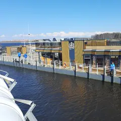
Кронштадт, Цитадельское ш., 14Ж
Огромный парк на западе Кронштадта: аллея флота, маяк, форты на горизонте и широкие виды на залив.
Подробнее и маршрут: Остров фортовПозвать сюда: Остров фортов
Фото: MBH, CC BY-SA 4.0 · Wikimedia Commons
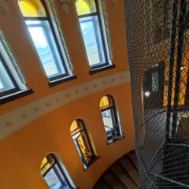
ул. Ломоносова, 14
Новое
Знаменитая винтовая лестница: если смотреть вниз с верхнего этажа, пролёт складывается в цветок. Жители ограничили доступ — попасть можно на платной экскурсии по записи.
Подробнее и маршрут: Парадная «Ромашка»Позвать сюда: Парадная «Ромашка»
Фото: Jikira, CC BY-SA 4.0 · Wikimedia Commons
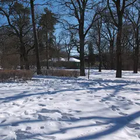
Сестрорецк, Большой Литейный пер., 37
Петровская дубовая роща на мысу у залива: песчаный берег, сосны и закаты прямо над водой — легко доехать на электричке.
Подробнее и маршрут: Парк «Дубки»Позвать сюда: Парк «Дубки»
Фото: t-rex, CC BY 3.0 · Wikimedia Commons
Выборг, парк Монрепо
Новое
Пейзажный парк на гранитных скалах над Выборгским заливом: мостики, остров-некрополь и вода между соснами. «Ласточка» с Финляндского — 1 час 15 минут; весной парк закрывают на просушку.
Подробнее и маршрут: Парк МонрепоПозвать сюда: Парк Монрепо
Фото: Pavlikhin, CC BY-SA 4.0 · Wikimedia Commons
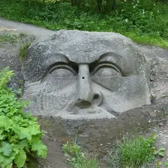
Петергоф, Ораниенбаумское ш., 2
Новое
Дикий парк рядом с Петергофом без толп: дворец Лейхтенбергских, каменная Голова богатыря у ручья и тропы к заливу. Вход свободный, электричка с Балтийского до Университетской.
Подробнее и маршрут: Парк СергиевкаПозвать сюда: Парк Сергиевка
Фото: Екатерина Борисова, CC BY-SA 4.0 · Wikimedia Commons
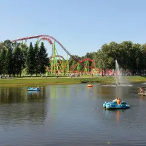
Крестовский пр., 23
Большой парк на Крестовском с прудами и аллеями, ведущими к заливу; рядом стадион и Яхтенный мост с видом на Лахту.
Подробнее и маршрут: Приморский парк ПобедыПозвать сюда: Приморский парк Победы
Фото: Bestalex, CC BY-SA 4.0 · Wikimedia Commons
Сенатская пл.
Пётр на гранитной скале и выход к Неве с видом на Васильевский — обязательная точка первой прогулки по центру.
Подробнее и маршрут: Сенатская площадь и Медный всадникПозвать сюда: Сенатская площадь и Медный всадник
Фото: Huanivanovich, CC BY-SA 3.0 · Wikimedia Commons
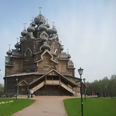
Свердловское г.п., Всеволожский р-н
Новое
Деревянный многоглавый храм на берегу Невы, повторяющий церковь в Кижах, и этнографическая усадьба вокруг. От «Рыбацкого» — автобус; вход на территорию свободный.
Подробнее и маршрут: Усадьба БогословкаПозвать сюда: Усадьба Богословка
Фото: User:Skydrinker, CC BY-SA 3.0 · Wikimedia Commons
Как позвать
- Выбери план, место или событие — в карточке адрес, цены и маршрут в Яндекс Картах.
- Нажми «Позвать сюда» — соберётся приглашение-игра для свидания или голосование для компании.
- Отправь ссылку в любой мессенджер: тебе ответят, а компания отметит, куда и когда может. Бесплатно и без регистрации.